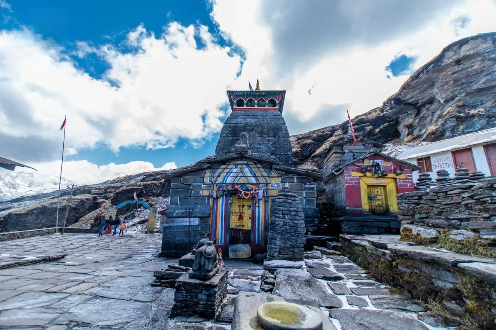
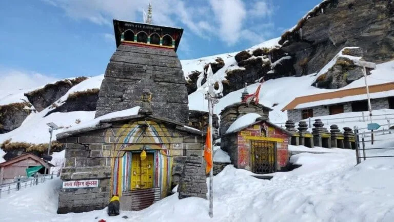
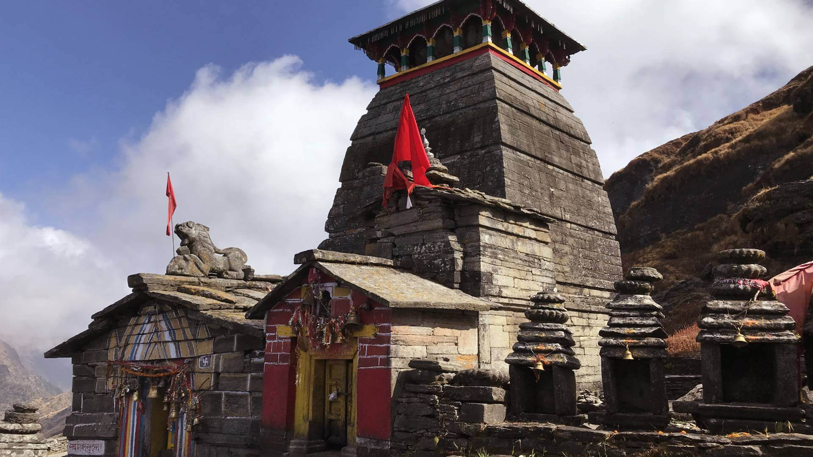
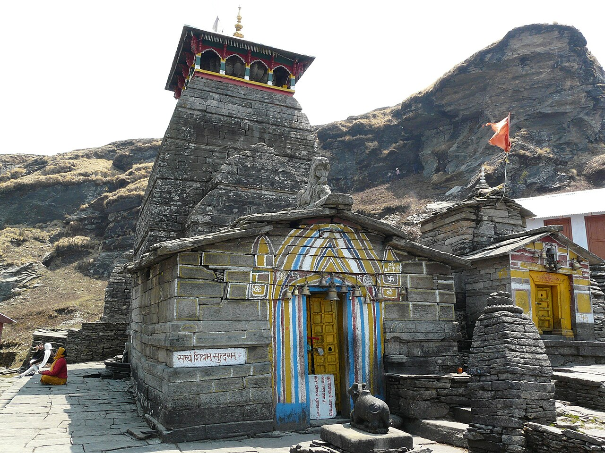
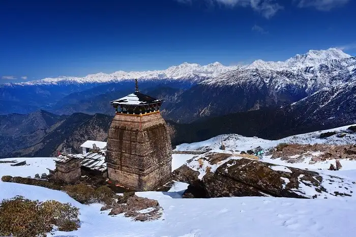
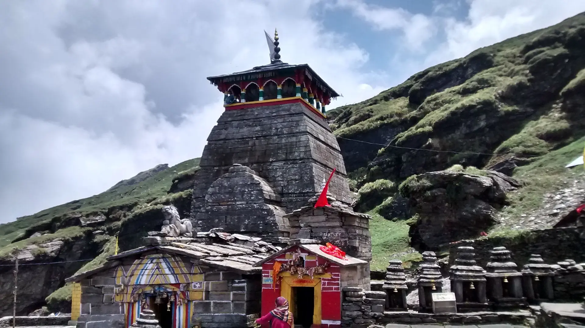

Badrinath Temple (also known as Badrinarayan Temple or Badarinath Dham) is one of the most revered and spiritually powerful shrines in India, forming the final and most exalted destination of the sacred Char Dham Yatra in Uttarakhand. Nestled on the banks of the Alaknanda River at an elevation of about 3,133 meters in the Chamoli district, this ancient temple is dedicated to Lord Vishnu in his form as Badrinarayan. Surrounded by the towering Nar and Narayan mountain peaks and the majestic Neelkanth Peak, the temple complex features exquisite architecture with a colorful facade, golden roof, and intricate carvings. Re-established by Adi Shankaracharya in the 8th–9th century (though its spiritual significance traces back to Vedic times), Badrinath is believed to be where Lord Vishnu, as Nar-Narayan, performed austerities for the welfare of the world — a place of profound divine energy, moksha, and liberation.
As part of the Char Dham (alongside Yamunotri, Gangotri, and Kedarnath) and one of the Panch Badri temples, Badrinath draws millions of pilgrims seeking blessings, sin-cleansing, and spiritual upliftment. The main deity is a black stone Shaligram idol of Lord Vishnu, worshipped with great reverence, while the serene surroundings — hot springs like Tapt Kund for ritual baths, nearby Narad Kund and Surya Kund, and the flowing Alaknanda — add layers of mystical and purifying energy. The temple opens only for six months (May–November) due to heavy snowfall, transforming into a vibrant hub of devotion, aartis, bhajans, and festivals during the season, offering an unforgettable blend of faith, Himalayan beauty, and timeless mythology.
May to June for peak pilgrimage season with pleasant weather (7–18°C) and open roads; September to October for clearer skies, fewer crowds, and stunning post-monsoon views. Temple opens around late April/early May (e.g., April 23, 2026) and closes in late October/November. Avoid monsoon (July–August) due to landslides and heavy rain; early mornings offer peaceful darshan amid vibrant energy during festivals like Mata Murti Ka Mela (August).
Main Badrinarayan shrine with Shaligram idol, Tapt Kund hot springs for holy dips, Narad Kund & Surya Kund ponds, colorful Singhdwar entrance, Sabha Mandap & Darshan Mandap for rituals, nearby Mana Village (India's last village), and scenic Alaknanda River views — perfect for darshan, aarti, meditation, photography, and experiencing the divine Himalayan aura. Part of the larger Char Dham circuit for ultimate spiritual fulfillment.
Book accommodations and transport early (especially May–June peak season), acclimatize to high altitude, take holy dip in Tapt Kund before darshan, carry warm layers (cold even in summer), wear modest clothing, maintain silence and respect sanctity, hire a guide if needed for rituals/poojas, start early to avoid long queues, and plan the full Char Dham route for deeper spiritual experience — no littering in this sacred site.
"In the lap of the eternal Himalayas, where Alaknanda sings ancient hymns and Nar-Narayan stand guard, Badrinath opens the gateway to moksha — a divine embrace where every pilgrim's step dissolves karma, every prayer echoes forever, and the soul finds its true home in the light of Vishnu's grace."